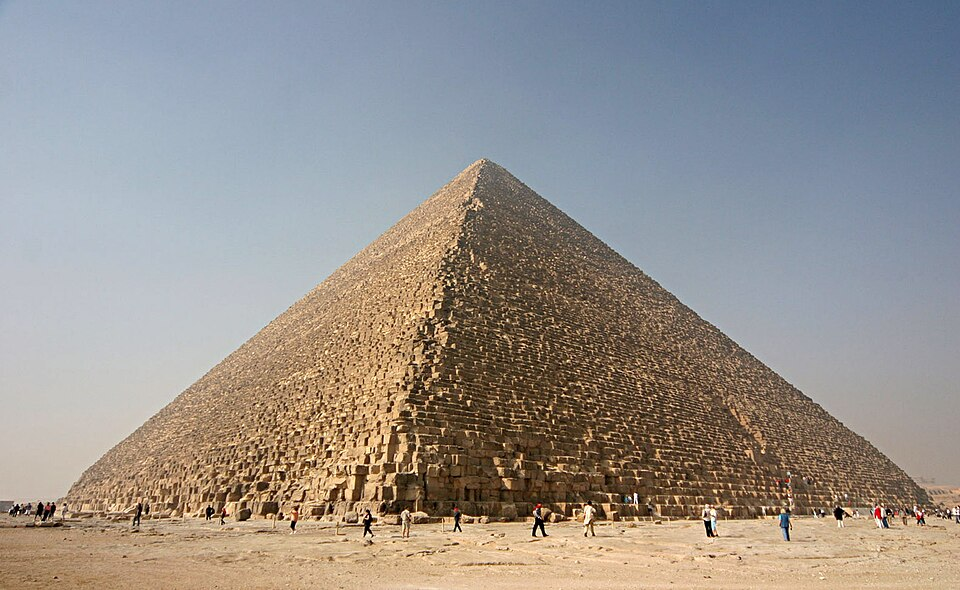
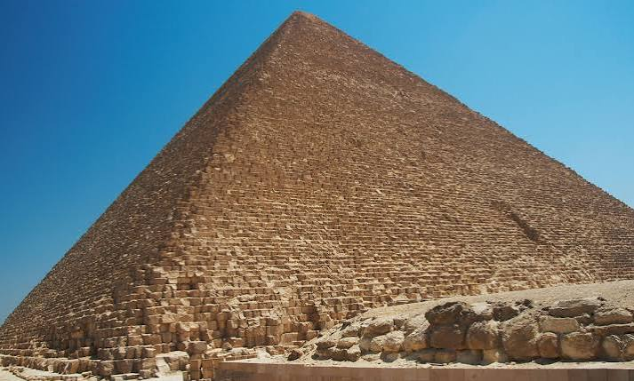

Construidas hace unos 4.500 años durante la IV Dinastía del Reino Antiguo, estas estructuras monumentales sirvieron como tumbas reales para los faraones Keops, Kefrén y Micerino. Diseñadas bajo la creencia de la vida eterna, debían albergar el cuerpo momificado del rey y sus pertenencias para su viaje al más allá. Durante el Imperio Nuevo, la zona sufrió saqueos y, siglos más tarde, sus piedras exteriores fueron desmontadas para construir mezquitas y fortalezas en El Cairo.

La Gran Pirámide de Keops ostentó el título del edificio más alto del mundo durante casi 3.800 años. El complejo destaca por su asombrosa orientación astronómica y matemática, alineada de forma casi perfecta con los puntos cardinales. Originalmente, las pirámides poseían una superficie lisa debido a un recubrimiento de piedra caliza blanca pulida que reflejaba la luz del sol. En la edificación del conjunto se utilizaron millones de bloques de piedra, algunos de los cuales superan las 50 toneladas de peso.

Hoy en día, las pirámides están catalogadas como Patrimonio de la Humanidad por la Unesco y constituyen el mayor dinamizador del turismo en Egipto. El desgaste del tiempo, los terremotos y la expansión urbana de El Cairo representan sus mayores desafíos. Recientemente, las autoridades han impulsado polémicas iniciativas de restauración y se apoyan en modernas tecnologías científicas, como el escaneo de muones, para buscar cavidades internas ocultas sin dañar la milenaria estructura de piedra.